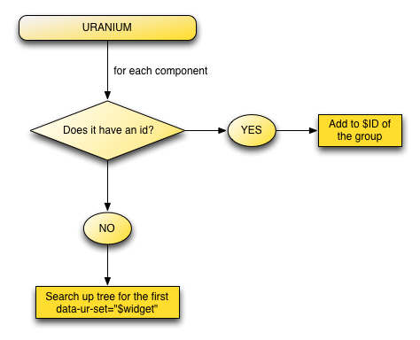

In Uranium, we can group widgets in two ways: sets and ids. A set is when the whole widget is wrapped in a div (or other tag) with the attribute data-ur-set="widget".
An id is where every component of the widget is given a unique id attribute. For example, giving the attribute data-ur-toggler-id="unique_id". So, this is an alternative way to group a set of divs.
It's generally a better practice to use data-ur-set. This allows for better, well-structured and hierarchical HTML. However, it isn't possible in all cases to add this attribute. It's in these instances we use data-ur-widget-id attributes. They are functionally the same - as seen below.
Uranium searches through the HTML document for the special attributes we give to tags. Once it sees the data-ur, it looks for groups of components. The set allows it to determine what widget we're defining.
Next, the javascript looks for ids on a component. If it finds an
id, it uses this. If it
This is explained visually in the flowchart below.
